故障診斷
快速定位異常，提供專業診斷建議。
從故障診斷、緊急維修到預防保養與遠程技術支持，將維保服務做成 ATNR 的持續服務入口。
快速定位異常，提供專業診斷建議。
快速響應、專業處置，降低停機時間。
定期檢查與保養，提升設備穩定性與使用壽命。
透過遠程技術支持，即時協助問題排查。
用真實泰國工程現場證明對接、整合、交付與持續服務能力。
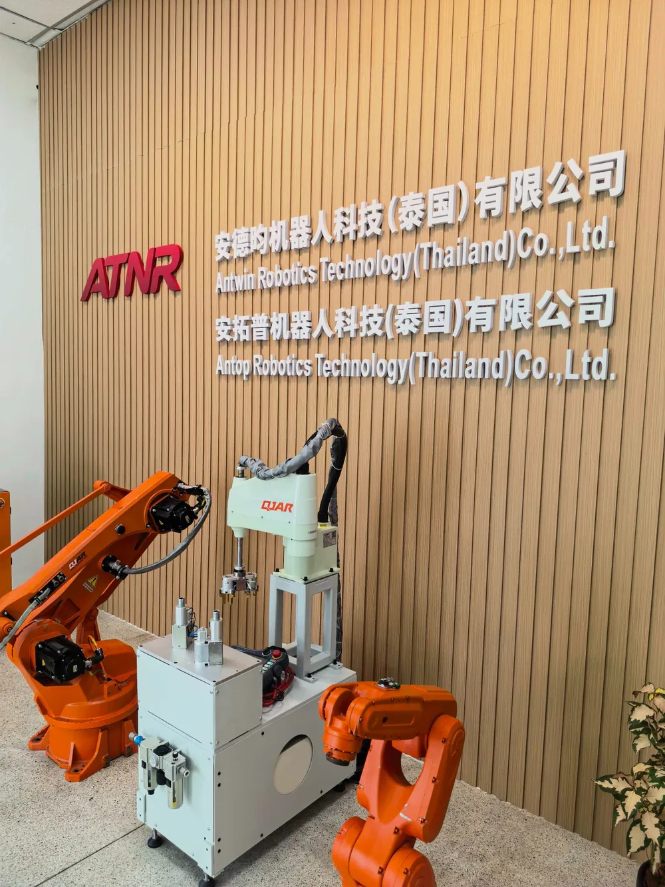
需求確認與現場對接
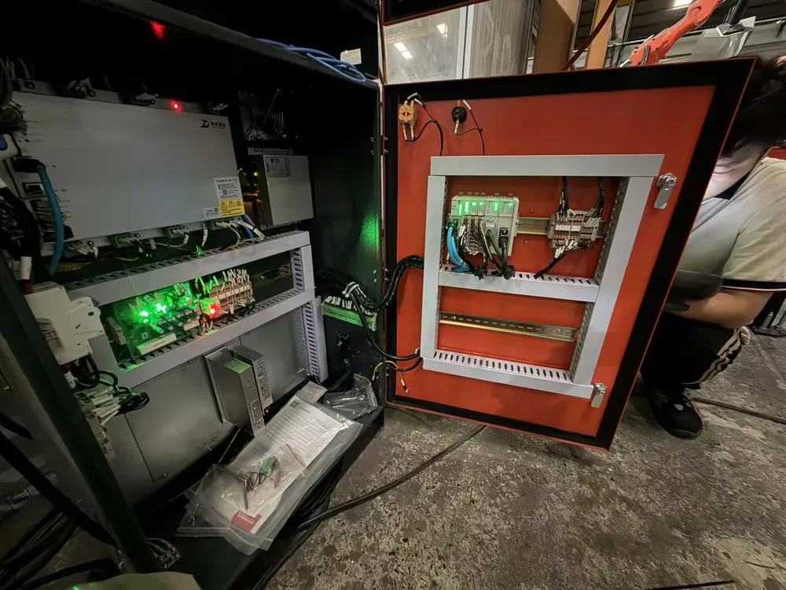
機械、電控、程式與設備協同
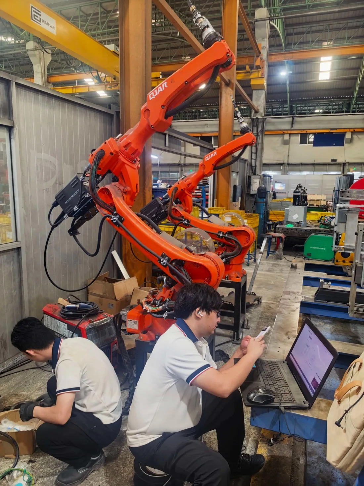
安裝、調試、FAT / SAT 與培訓
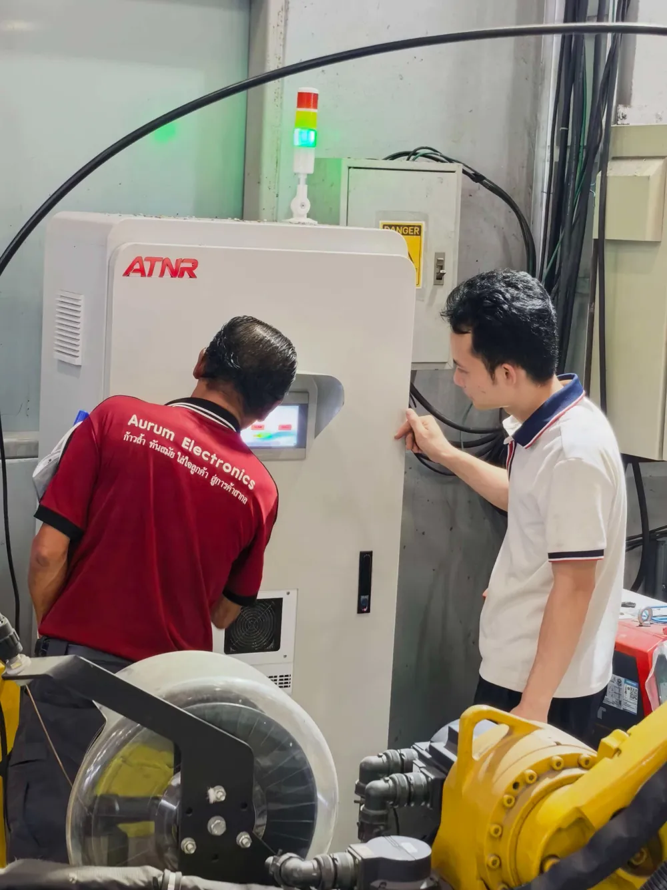
維修、改善與持續服務
這一區只呈現發展方向，不把未完成的未來能力包裝成既有成熟產品。
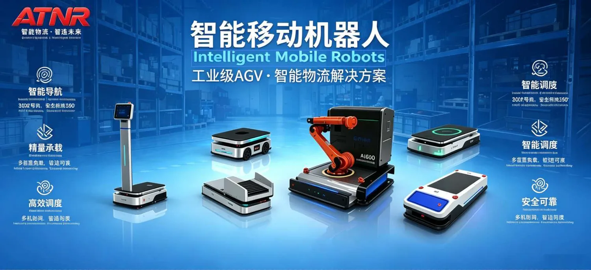
搬運、物流與柔性調度應用。
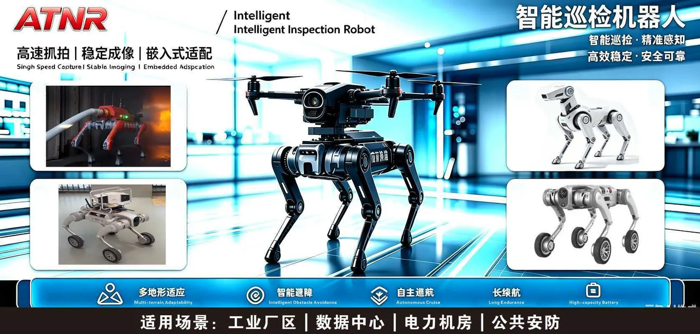
面向工業場域的巡檢與感知應用。
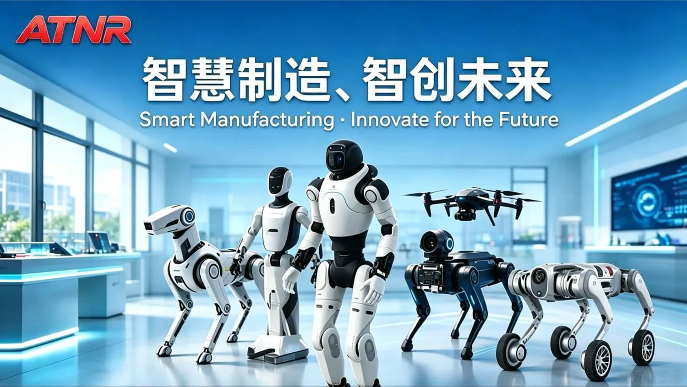
以真實維保案例與知識沉澱為基礎，逐步導入 AI 輔助問題排查。
先從 Email 建立正式聯繫；公司級 WhatsApp Business 後續接入，不綁定個人帳號。
從 CNC 單機上下料到多機柔性連線，依製程與產能需求整合機器人、設備與物流。
影片採點擊後才載入 YouTube 的 Free-First 模式；正式影片尚未接入時，封面與案例位置仍能正常顯示。
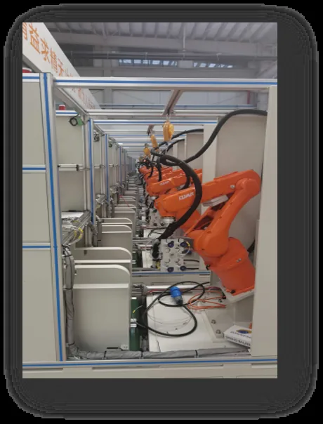
15–30 sec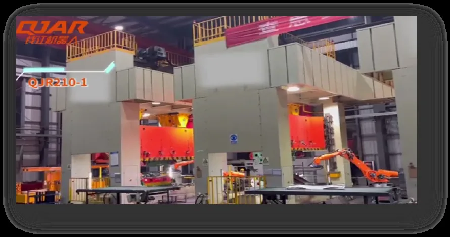
15–30 sec依客戶工件、節拍與現場條件評估導入方式。
依客戶工件、節拍與現場條件評估導入方式。
依客戶工件、節拍與現場條件評估導入方式。
工件、節拍、品質與現場條件。
設備、機器人、工裝與流程匹配。
機械、電控、程式與安全整合。
安裝、調試、驗收與後續服務。
提供工件、節拍與現場資訊，我們可先做初步判讀。
聚焦去毛刺、打磨、拋光與表面精修，改善一致性、效率與作業安全。
影片採點擊後才載入 YouTube 的 Free-First 模式；正式影片尚未接入時，封面與案例位置仍能正常顯示。
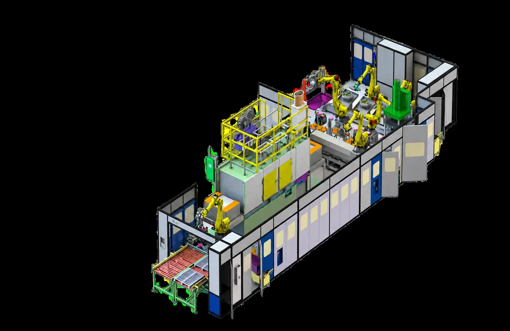
15–30 sec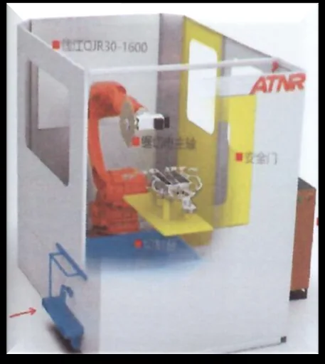
15–30 sec依客戶工件、節拍與現場條件評估導入方式。
依客戶工件、節拍與現場條件評估導入方式。
依客戶工件、節拍與現場條件評估導入方式。
工件、節拍、品質與現場條件。
設備、機器人、工裝與流程匹配。
機械、電控、程式與安全整合。
安裝、調試、驗收與後續服務。
提供工件、節拍與現場資訊，我們可先做初步判讀。
整合機器人、焊接電源、變位機、工裝與雷射加工設備，形成可交付的工作站與產線方案。
影片採點擊後才載入 YouTube 的 Free-First 模式；正式影片尚未接入時，封面與案例位置仍能正常顯示。
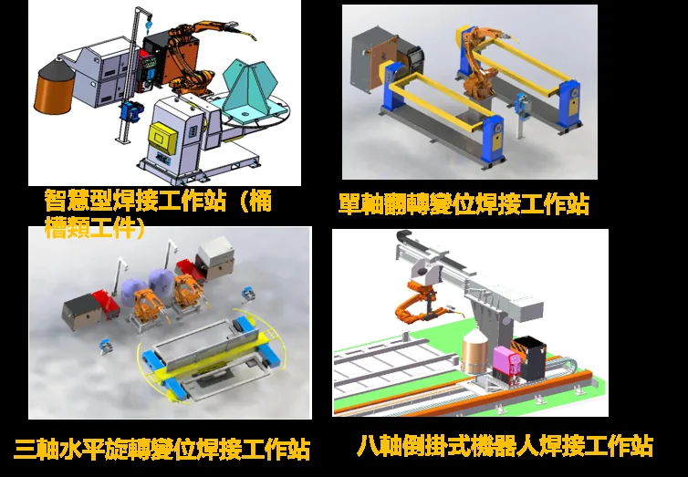
15–30 sec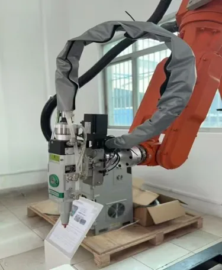
15–30 sec依客戶工件、節拍與現場條件評估導入方式。
依客戶工件、節拍與現場條件評估導入方式。
依客戶工件、節拍與現場條件評估導入方式。
工件、節拍、品質與現場條件。
設備、機器人、工裝與流程匹配。
機械、電控、程式與安全整合。
安裝、調試、驗收與後續服務。
提供工件、節拍與現場資訊，我們可先做初步判讀。
從自動化單元、智慧物流與設備聯網開始，依需求分階段推進整線與工廠級整合。
影片採點擊後才載入 YouTube 的 Free-First 模式；正式影片尚未接入時，封面與案例位置仍能正常顯示。
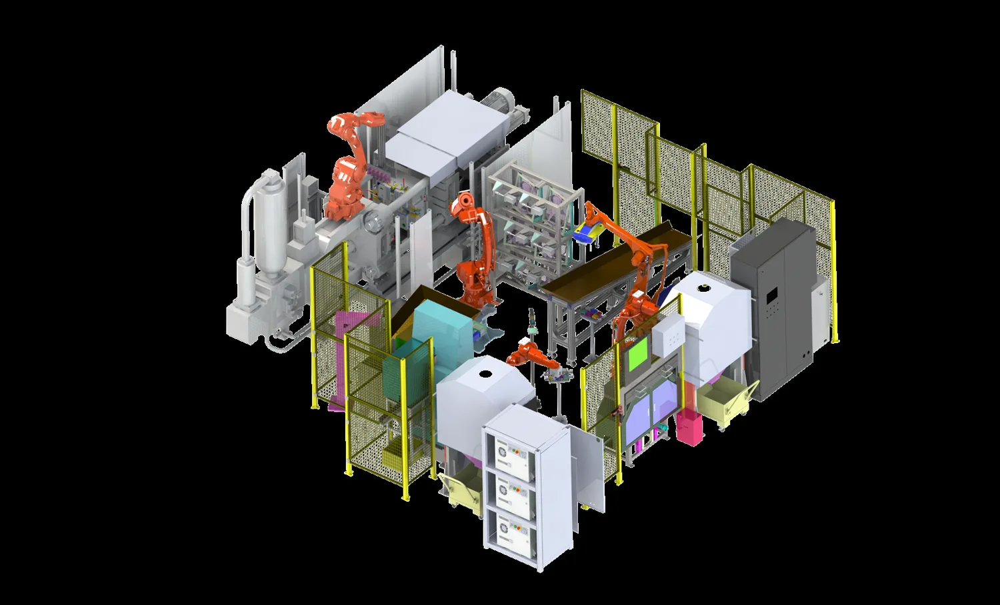
15–30 sec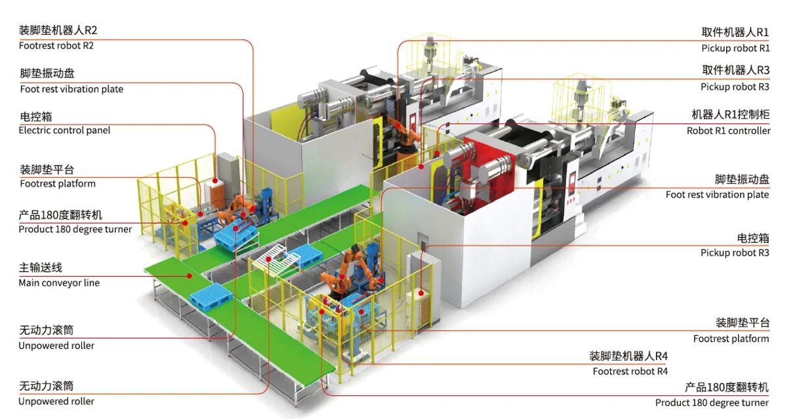
15–30 sec依客戶工件、節拍與現場條件評估導入方式。
依客戶工件、節拍與現場條件評估導入方式。
依客戶工件、節拍與現場條件評估導入方式。
工件、節拍、品質與現場條件。
設備、機器人、工裝與流程匹配。
機械、電控、程式與安全整合。
安裝、調試、驗收與後續服務。
提供工件、節拍與現場資訊，我們可先做初步判讀。
以泰國在地服務為基礎，從故障診斷、緊急維修到預防保養與遠程支持，逐步建立可持續、可沉澱的維保服務模式。
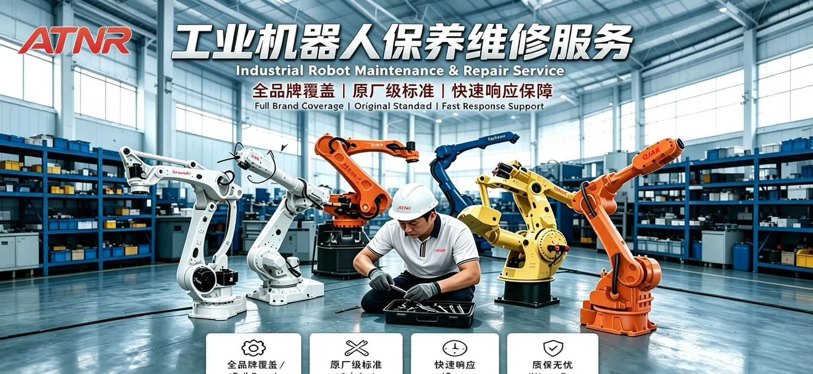
現階段先以可執行、可收費、可累積客戶資訊的維保服務為主，不先做重型售後系統。
面向既有工業機器人設備的檢修、保養與狀態確認。
根據異常現象、Alarm、照片與影片做初步判讀。
依問題緊急程度安排遠程或現場工程支援。
建立定期點檢、保養與風險預防機制。
依實際故障與設備狀態評估備件、更換與改善。
先從 Email、照片、影片與工程師判讀建立可執行的遠程支持流程。
對客戶只保留最需要理解的三步：提供資訊、工程判讀、遠程或現場處理。
品牌、型號、Alarm Code、異常現象、照片或影片。
先確認問題類型、風險與是否需要補充資料。
依實際狀況進行遠程排查、備件建議或安排現場服務。
這是發展方向，不是現階段已完成的產品。先累積真實維保 Case，再建立知識庫與 AI 輔助排查能力。
建議包含：品牌、型號、Alarm Code、異常現象、照片／影片與所在地。